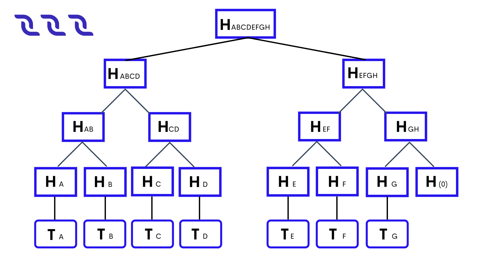

Bloque#
Un bloque es un eslabón en la cadena de la cadena de bloques. El bloque contiene transacciones. Un bloque tiene su altura.
El tamaño máximo de bloque es \(1\) MB. La máxima complejidad total de scripts en transacciones del bloque es \(2,500,000\). Se tiene en cuenta la complejidad de todos los scripts ejecutados: scripts de dApp, scripts de cuentas y scripts de activos.
Generación de Bloques#
Una generación de bloques es la creación de un nuevo bloque en la cadena de bloques. Los bloques son generados por nodos generadores según el algoritmo FPoS y el protocolo DecentralChain-M5. El generador de bloques solo firma los encabezados de los bloques. Los encabezados de bloque contienen el hash raíz de Merkle de las transacciones de bloque. Esto hace posible verificar los encabezados de bloque además de las transacciones y proporcionar evidencia de la presencia de transacciones en el bloque sin la presencia de todas las transacciones. Consulte los detalles en el artículo sobre hash raíz de transacciones.
Objetivo Base#
El objetivo base es la variable en la fórmula de tiempo promedio de generación de bloques que ajusta el tiempo de generación de bloques a \(60\) segundos.
Firma de Generación#
La firma de generación es la variable en la fórmula de tiempo promedio de generación de bloque. Se utiliza para verificar si el nodo generador actual es elegible para generar el siguiente bloque. La firma de generación se calcula utilizando VRF (función aleatoria verificable con pruebas cortas y llaves), una función pseudoaleatoria que utiliza un mensaje y la clave privada de una cuenta para proporcionar una prueba verificable no interactiva de la exactitud de su salida.
Esta mejora permite resistir los ataques de molienda de estacas destinados a influir en la aleatoriedad de generación de bloques para omitir la oportunidad del minero de crear un bloque. El uso de VRF hace que la generación de firmas sea impredecible debido a la necesidad de conocer la clave privada para el cálculo. Solo el titular de la clave privada puede calcular el hash, pero cualquiera puede verificar la corrección del hash utilizando la clave pública del encabezado del bloque.
El VRF contiene la función de calculateVRF, que calcula la prueba de algún mensaje, y la función de verifyVRF, que verifica la prueba de la función de calculateVRFVRF con un mensaje y la clave pública del firmante. Teniendo en cuenta que la firma de generación de un bloque es igual a calcular la salida calculateVRF para una firma de generación anterior con clave privada de cuenta sk (del generador de \(i+1\) th block):
generationSignaturei+1 = VRFproof = calculateVRFsk(VRFi)
La salida de la función de calculateVRF es una prueba de VRF, lo que significa que se puede verificar la validez de la firma. La salida de la función verifyVRF(pk \(_i\), generationSignature \(_i\)) se usa para definir el retraso de tiempo entre \(i+99\) y \(i+100\) bloques para concreto generador de bloques
Altura del Bloque#
La altura del bloque es un número de secuencia de un bloque en la cadena de bloques.
Firma del Bloque#
Una firma de bloque es un hash que un nodo generador adquiere cuando firma el bloque generado con la llave privada de la cuenta de la billetera del nodo.
Marca de Tiempo del Bloque#
Una marca de tiempo de bloque es indica el tiempo en que ocurrió la generación del bloque. El tiempo se especifica en milisegundos que han pasado desde el comienzo de la época de Unix.
Cuando el nodo recibe un nuevo bloque de la red blockchain, verifica que el valor de la marca de tiempo del bloque no supere la hora UTC en más de \(100\) milisegundos. Los nodos validan el valor de la marca de tiempo del bloque utilizando la fórmula de FPoS.
Bloque Génesis#
Un bloque de génesis es el primer bloque de la cadena de bloques. Un bloque de génesis contiene una o más transacciones génesis. Hay un bloque de génesis en la cadena de bloques.
Hash Raíz de Transacciones#
El campo transactionRoot en el encabezado del bloque contiene el hash raíz del árbol Merkle de transacciones del bloque. El hash raíz es la prueba de que el bloque contiene todas las transacciones en el orden correcto. El hash raíz de transacciones en el encabezado del bloque tiene los siguientes propósitos:
Para probar la integridad de las transacciones en el bloque sin presentar todas las transacciones.
Firmar únicamente la cabecera del bloque, separadamente de sus transacciones.
Cálculo de la Raíz de la Transacción#
Se calcula el hash de cada transacción en el bloque. Por ejemplo:
\(H_A\) = hash(\(T_A\))
\(H_B\) = hash(\(T_B\))
Cada par de hash adyacentes se concatena y el hash se calcula para cada concatenación resultante:
\(H_{AB}\) = hash(\(H_A\) + \(H_B\))
Si el último hash no tiene un par, se concatena con el hash de cero bytes: \(H_{GH}\) = hash(\(H_G\) + hash(0))
Se repite el paso 2 hasta obtener el hash raíz:
\(H_{ABCDEFGH}\)
El hash raíz se escribe en el campo transactionRoot.
Si el bloque está vacío, transaccionesRoot = hash(0). La cadena de bloques DecentralChain utiliza la función hash BLAKE2b-256.
Prueba deTransacción en Bloque#
Supongamos que el lado \(1\) almacena los datos completos de la cadena de bloques y el lado \(2\) almacena solo los encabezados de los bloques. Para probar que el bloque contiene una transacción determinada, side \(1\) proporciona los siguientes datos:
T: Transacción a comprobar.
merkleProofs: matriz de valores hash hermanos del árbol de Merkle, de abajo hacia arriba.
index: Índice de la transacción en el bloque.

Por ejemplo, para la transacción \(T_D\):
merkleProofs = [ \(H_C\), \(H_{AB}\), \(H_{EFGH}\) ]
index = \(3\)
El lado 2 verifica la prueba:
Calcula el hash de la transacción que se está comprobando (todos los datos de la transacción son hash, incluida la firma): \(H_D\) = hash(\(T_D\))
2. It concatenates the current hash with the corresponding hash of the merkleProofs array and calculates the hash of concatenation. index determines in which order to concatenate the hashes:
Si el enésimo bit de índice desde el final es \(0\), entonces el orden es: el hash actual + el enésimo hash de merkleProofsarray (el hash de prueba está a la derecha).
Si el enésimo bit es \(1\) , el orden es: el enésimo hash de merkleProofsarray + el hash actual (el hash de prueba está a la izquierda). Por ejemplo, index = \(3_{10}\) = \(11_2\) , por lo tanto:
merkleProofs[0] = \(H_{C}\) está a la izquierda,
merkleProofs[1] = \(H_{AB}\) está a la izquierda,
merkleProofs[2] = \(H_{EFGH}\) está a la derecha.
Repite el paso 2 hasta obtener el hash raíz: \(H_{ABCDEFGH}\)
Compara el hash de raíz obtenido con las transaccionesRoot ya conocidas del encabezado del bloque. Si los valores hash coinciden, la transacción existe en el bloque.
Herramientas#
Los siguientes métodos de API de nodo aceptan ID de transacciones y proporcionan la prueba de que la transacción está en un bloque para cada transacción:
GET /transacciones/merkleProof
POST /transacciones/merkleProof
Los métodos se describen en el artículo sobre transacciones. Puedes verificar una transacción en la misma cadena de bloques sin usar un hash raíz, ya que los nodos de DecentralChain almacenan todos los datos de la cadena de bloques, incluidas todas las transacciones. Utilice la siguiente función Ride integrada:
transactionHeightById(id: ByteVector): Int|Unit
La función devuelve la altura del bloque si existe la transacción con el ID especificado. De lo contrario, devuelve una unidad. Consulte la descripción de la función en el artículo funciones blockchain. Para verificar una transacción en un bloque en la cadena de bloques externa, puede usar la siguiente función Ride incorporada:
createMerkleRoot(merkleProofs: List[ByteVector], valueBytes: ByteVector, index: Int): ByteVector
Esta función es aplicable si la cadena de bloques externa utiliza el mismo algoritmo para calcular el hash raíz de las transacciones. La función createMerkleRoot calcula el hash raíz a partir del hash de transacción y los hashes hermanos del árbol merkle (consulte los pasos 1 a 3). Para verificar una transacción en un bloque, compare el hash de raíz calculado con el valor de transactionRoot en el encabezado del bloque.